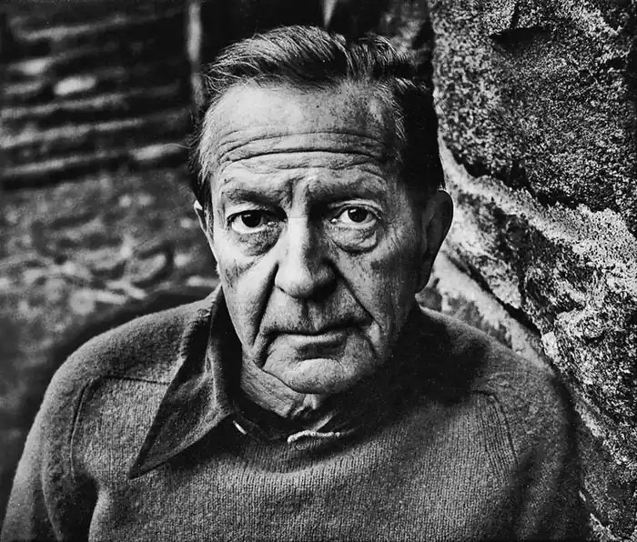
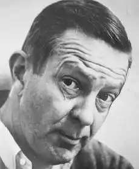

Чівер, ДЖОН (Cheever, John) (1912-1982), американський письменник. У його ранніх романах представлений міфічний пасторальний світ Нової Англії, з якого він вийшов, і повільне його руйнування під дією нових цінностей. Пізніші твори присвячені життю Передмістя ( "Сабурбіі") і її негараздів.
Народився 27 травня в Квінсі (шт. Массачусетс), закінчив Академію Тейер в Саут-Брейнтрі. У 1935 надрукував своє перше оповідання Мебльовані кімнати в Брукліні (The Brooklyn Rooming House) в журналі "Нью-Йоркер", з яким співпрацював все життя, опублікувавши в ньому понад 120 творів. Збірники його оповідань включають: Як живуть деякі люди (The Way Some People Live, 1943), Велетенське радіо (The Enormous Radio, 1953), Зломщик з Шейді-Хілл (The Housbreaker of Shady Hill, 1958), Люди, місця і речі, які не з'являться в моєму наступному романі (Somе Pеople, Places, and Things That Will Not Appear in My Next Novel, 1961), Бригадир і солом'яний вдова (The Brigadier and the Golf Widow, 1964), Світ яблук (The World of Apples, 1973) і Розповіді Джона Чівер (The Stories of John Cheever, 1978; Пулітцерівська премія, 1979). У 1958 Чивер став лауреатом Національної книжкової премії за свій перший роман Сімейна хроніка Уопшотов (The Wapshot Chronicle, 1957). У 1964 вийшло його продовження — Скандал в сімействі Уопшотов (The Wapshot Scandal). Чивер є також автором романів Буллет-Парк (Bullet Park, 1969), Фоконер (Falconer, 1977) і Яке райське картина (Oh What a Paradise It Seems, 1982). Помер Чивер в Оссінінг (шт. Нью-Йорк) 18 червня 1982.
Твори Чівера свідчать про неабияку спостережливості і силі творчої уяви. Головна тема його книг — самотність людини, чиї спонукання нерідко вступають в конфлікт з суспільним розпорядком. Хоча ці мотиви найбільш яскраво представлені в оповіданнях Чівер про передмістях Нової Англії, де втрата гармонії минулих років видається прелюдією до відчуження сучасного суспільного життя, тема обмеження свободи вже присутній в здавалося б не порушене розпадом світі романів про Уопшотах. Подібно Дж. Апдайку, який оспівує йде в минуле спільність людей, які сповідують протестантські цінності, Чівер кладе в основу свого художнього світу мотиви втечі і повернення на круги своя.